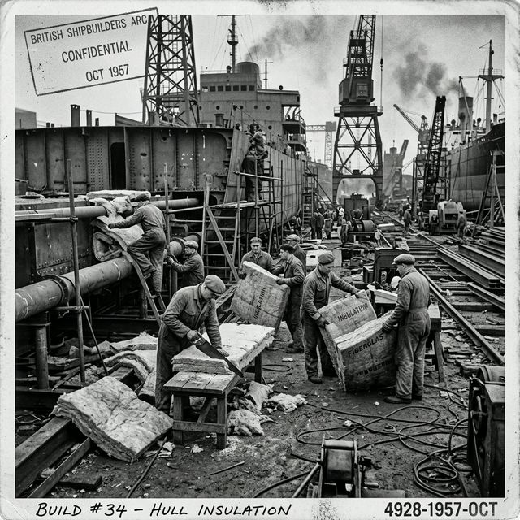

Occupational Asbestos Exposure Risks
The jobs, industries, and work environments historically associated with elevated asbestos exposure and later mesothelioma risk.
Workplace exposure remains the clearest mesothelioma risk pattern. Public-health agencies consistently identify occupational asbestos exposure as the main risk factor for pleural mesothelioma. Higher-risk work has historically included insulation, shipbuilding and ship repair, plumbing and pipefitting, construction, manufacturing, refinery work, and automotive brake or clutch work. American Cancer Society

Industries repeatedly identified in federal data
CDC mortality reporting has found elevated mesothelioma burden in sectors such as ship and boat building and repair, petroleum refining, and industrial chemical manufacturing. Occupations with elevated burden included insulation workers, plumbers, pipefitters, and steamfitters. CDC MMWR
Why these jobs carried more risk
Asbestos was valued for heat resistance, durability, and insulation properties. It appeared in pipe covering, boilers, insulation, cement products, spray coatings, gaskets, brakes, and other materials. In high-heat or heavy industrial settings, those materials could be cut, repaired, removed, or degraded over time, releasing fibers into the air. OSHA
Long delays complicate exposure history
Because mesothelioma can appear decades after exposure, current occupation does not always reveal the relevant risk. Earlier work history often matters more than a person’s current role. CDC MMWR